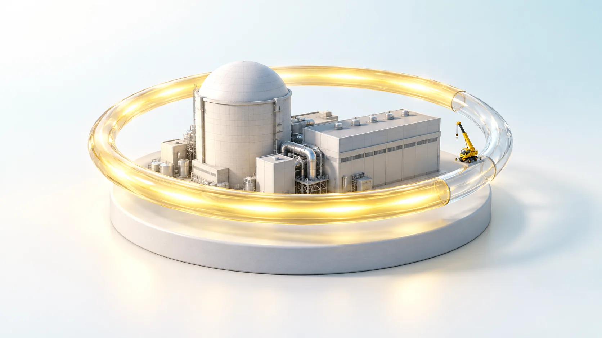
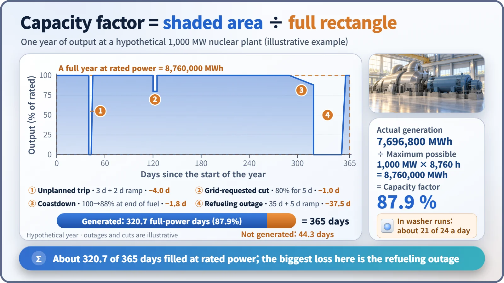
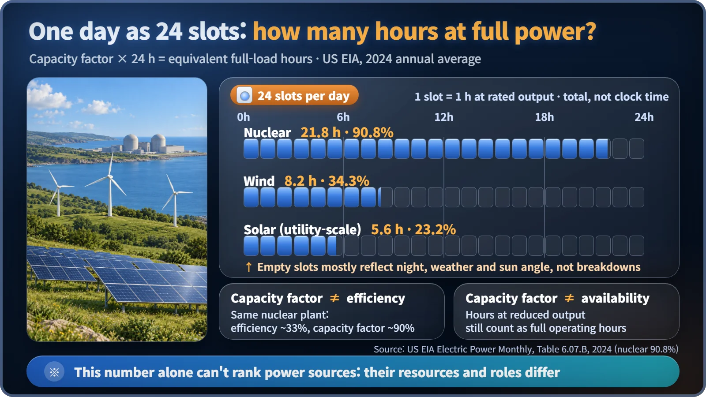

Plant Operation, Control & the Grid · 248
The Laundromat Washer's Report Card — How to Read a Nuclear Plant's Capacity Factor
Actual generation divided by a year at full power: the shaded area over the full rectangle. One division, and a lot to read into it.

The capacity factor is actual generation divided by what the plant would have produced running at rated output nonstop. On a graph, it is the shaded area under the output line divided by the full rectangle. Outages, trips, grid-requested cuts and coastdown each take a bite, and in 2024 US nuclear plants averaged 90.8%, or about 21.8 full-power hours a day. [3]
The laundromat owner's notebook
Every month-end, the owner of the neighborhood laundromat opens the little counter on each washing machine and writes down how many loads it ran. Every wash takes one hour and the shop is open 24 hours a day, so the most a machine can run in a day is 24 loads. Average the counters and it comes to about 18 a day: "18 ÷ 24 = 75%."
That is exactly the same calculation as a power plant's capacity factor, which South Korean statistics usually call the utilization rate.
A definition that takes one division
The capacity factor is the electricity a plant actually produced over a period, divided by the electricity it would have produced running at rated output (the maximum it is designed to deliver continuously) without a moment's break over the same period. [1]
Capacity factor = actual generation (MWh) ÷ [rated output (MW) × period (h)]
A year has 8,760 hours. For a 1,000 MW plant, the denominator is always 1,000 MW × 8,760 h = 8.76 million MWh. Only the numerator changes. Put the year on the horizontal axis and output on the vertical, and the denominator is a rectangle filled to rated height while the numerator is the shaded area under the actual output line.

Converted into days of running flat-out at rated power, this hypothetical plant worked about 320.7 of the year's 365 days. That's about 7,696,800 MWh; divide by 8.76 million MWh and you get 87.9%. So where did the other 44-odd days go?
Four things that eat the rectangle
Cleaning and parts-replacement days. Every 12 to 24 months, a nuclear plant shuts its reactor down, replaces part of the fuel and inspects its equipment. This planned maintenance and refueling outage takes the biggest bite: in the example, a single 35-day shutdown took about 9.6 percentage points.
Days the machine suddenly breaks down. An equipment problem stops the plant without warning, an unplanned shutdown. The loss includes the time spent stopped and the time spent slowly raising output again.
Quiet hours before dawn. Even a healthy plant produces less than its rating when the grid asks it to reduce output. It isn't stopped, but the numerator shrinks.
Running low on detergent near the end. Just before refueling, the margin for sustaining the chain reaction shrinks and holding rated output becomes difficult. Gradually lowering output to keep running until the outage date is called coastdown. Output is sometimes also reduced in summer, when the seawater or river water used for cooling is too warm.
Take all those bites out and the hypothetical plant lands at 87.9%. In real life, South Korea's nuclear fleet posted a utilization rate of 84.6% in 2025. [2]
Whose "rating" is in the denominator?
A power plant uses some of its own electricity to run cooling pumps, fans and control systems: station service power. So there are two ratings: gross output, measured at the generator terminals, and net output, what's sent to the grid. Saeul Unit 1 in South Korea (an APR1400) has a gross capacity of 1,488 MW and a net reference output of 1,392 MW, a difference of about 96 MW. [4]
The rule is simple: match the basis of numerator and denominator. Net generation goes over net capacity, gross over gross. IAEA and US EIA statistics use the net basis. Countries and agencies may differ, so check which rating a statistic uses before comparing. [1] [3]
Nuclear 21.8 hours, solar 5.6 hours
Multiply the capacity factor by 24 and you get how many hours of the day a source effectively ran at rated output. With US EIA statistics for 2024:
| Source (US, 2024) | Capacity factor | Full-power hours per day |
|---|---|---|
| Nuclear | 90.8% | 21.8 h |
| Wind | 34.3% | 8.2 h |
| Solar (utility-scale) | 23.2% | 5.6 h |

Nuclear scores high because, once fuel is loaded, it can run day and night for more than a year regardless of the weather, stopping mostly for maintenance. Wind runs only when the wind blows, and solar only when the sun is up. US nuclear plants recorded 92–93% every year from 2020 through 2023. [3]
Three common mix-ups
Solar's low number is not a malfunction. Night falls, the sun sits at an angle, clouds roll in, and even a perfect panel can't reach its rating, like a washer that only gets power while the sun is up. South Korean solar is said to be around 15%. The capacity factor is a meaningful report card only when comparing the same kind of source under the same conditions.
It isn't efficiency. Efficiency is the share of the fuel's heat turned into electricity, about 33% for a light-water reactor. The capacity factor is how fully the rating was used over time. A nuclear plant holds both numbers at once: efficiency 33%, capacity factor around 90%.
It isn't availability. Availability counts only the hours a unit was able to run; an hour at half output still counts as a full hour. The capacity factor also asks how hard it ran, so it is usually less than or equal to availability.
Key takeaways
Installed capacity alone doesn't tell you how much electricity a plant delivers: the same 1,000 MW produces 7,884 GWh a year at a 90% capacity factor, but 2,190 GWh at 25%. That's why planners always look at capacity and capacity factor as a pair. And a nuclear plant doesn't skip maintenance for this number; thorough maintenance means fewer unplanned shutdowns, which is what shows up in the capacity factor, just as the laundromat owner doesn't begrudge cleaning day.